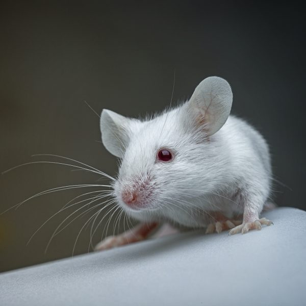
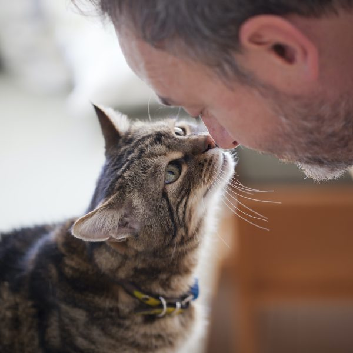
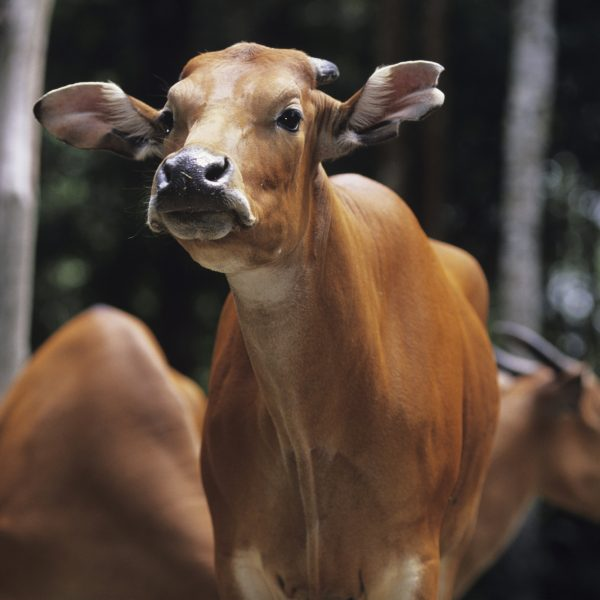
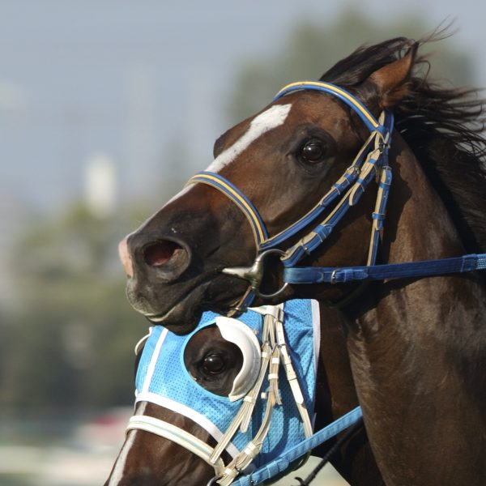
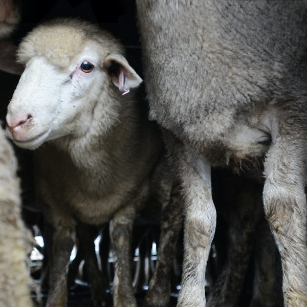
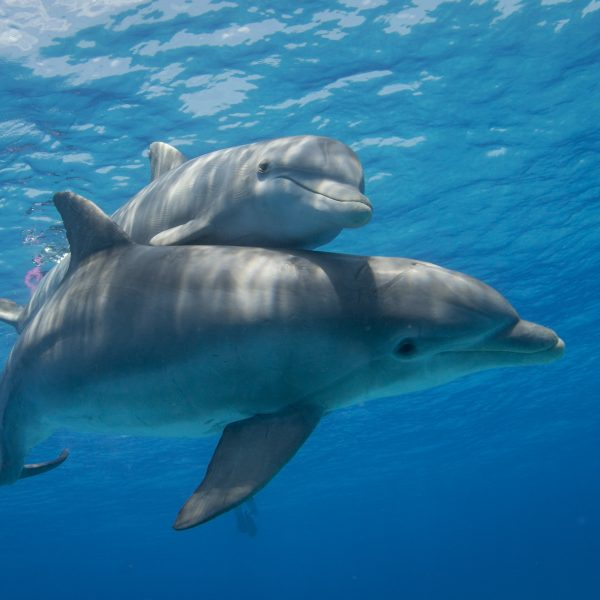
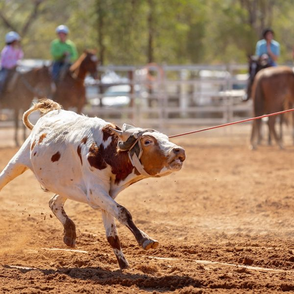

Our work
Whatever it takes—wherever it takes us—we’re always there for animals.
We're the eyes in the field and we're a voice at the table, where and when animals needs representation. Our public campaigns and strategic investigations aim to elevate animals in society and pave the pathway to a kinder world for all.
Whatever it takes—wherever it takes us—we’re always there for animals.
We're the eyes in the field and we're a voice at the table, where and when animals needs representation. Our public campaigns and strategic investigations aim to elevate animals in society and pave the pathway to a kinder world for all.
Ending cruelty
-
Animal circuses

-
Animal testing
-
Companion animals
-
Factory farming

-
Farmed animals
-
Greyhound racing

-
Horse racing
-
Live export
-
Marine animals
-
Rodeos
-
Shooting and hunting

-
Wildlife

-
Zoos and aquariums